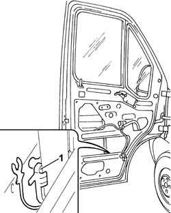
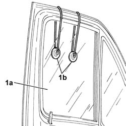
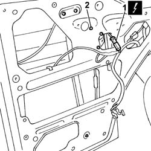
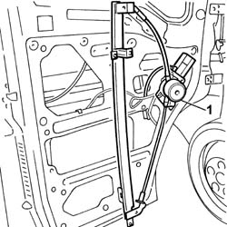

7005M20 FRONT SIDE DOOR ELECTRIC WINDOW SYSTEM - R R WITH DOOR PANEL/SUPPORT FRAME REMOVED
- Path
- Procedures > 70 FITTINGS > 7005 PASSENGER COMPARTMENT FRONT SIDE DOORS > 7005M FRONT ELECTRIC WINDOWS > 7005M20 FRONT SIDE DOOR ELECTRIC WINDOW SYSTEM - R R WITH DOOR PANEL/SUPPORT FRAME REMOVED
- Kind
- repair procedure (removal / refitting; the operation number is the code)
- Applies to
- all engines; all production periods
- Interactive page
- https://sloeber94.github.io/elrnDB-fDct/en/#/244001450
Applies to: all engines; all production periods
 Removing
Removing
 Refitting
Refitting- Lower the window glass.
1. Release the window glass from the lower supporting clip.

Applies to: all engines; all production periods
- Completely raise the window glass (1a) and keep it secured in position using suitable equipment (1b).

Applies to: all engines; all production periods
- Disconnect the electrical connector for the window opening motor.
 | Description | Connector |
|---|---|---|
1 | Left external rear view mirror | P060 |
| Description | Connector |
|---|---|---|
1 | Right external rear view mirror | P061 |
2. Undo the window opening mechanism fixing bolts.

Applies to: all engines; all production periods
1. Remove the window opening mechanism from the door frame.

Applies to: all engines; all production periods
Refitting
Removing- Insert the window opening mechanism in the special housing in the door frame.
- Fasten the window opening mechanism to the door frame tightening the fixing bolts.
- Connect the electrical connector for the window opening mechanism motor.
| Description | Connector |
|---|---|---|
. | Left external rear view mirror | P060 |
| Description | Connector |
|---|---|---|
. | Right external rear view mirror | P061 |
- Lower the window and secure it to the lower window opening mechanism supporting clip.
- Raise the window completely.